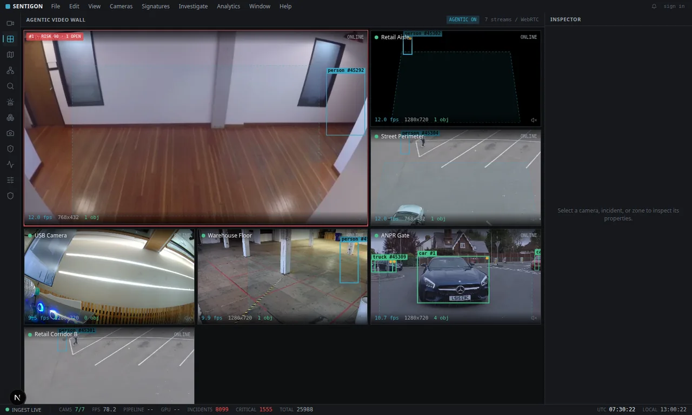
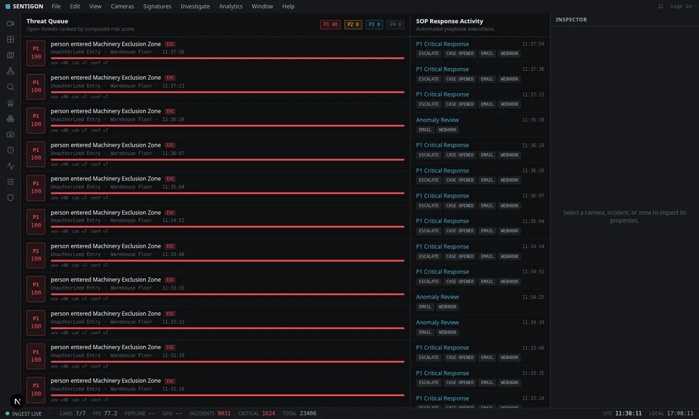
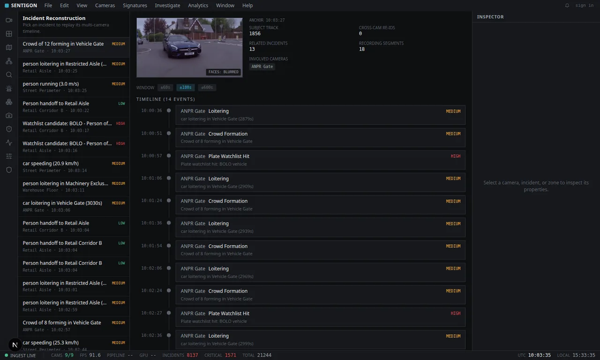

Computer vision
Sentigon
An agentic security operations center that runs entirely on your own hardware. Ordinary camera feeds become an autonomous, reasoning command center, with local models, no cloud, and no footage leaving the network.
01 / The problem
Most AI surveillance is a cloud wrapper
The typical product in this category is a thin layer over a cloud API. Your footage leaves the building, you pay per frame, and a "person detected" box is the extent of the intelligence. The operator is still watching a wall of feeds, now with more notifications.
Sentigon inverts all three. Every model (vision, language, OCR, audio) runs on your hardware. And the output is not a detection but a scored, verified incident with a rationale attached.
| Typical AI surveillance | Sentigon | |
|---|---|---|
| Where the AI runs | Someone else's cloud | Your hardware, fully offline |
| Your footage | Uploaded and retained | Never leaves your network |
| Cost model | Per-frame / per-camera SaaS | Free, open and self-hosted |
| Output | A detection box | A scored, VLM-verified incident with a rationale |
02 / How it works
Detection is the first stage, not the last
- Ingest and recording. RTSP streams are captured, relayed through MediaMTX for browser playback, recorded in segments to object storage, and kept in a short pre-roll ring buffer, so evidence exists from before an incident fired.
- Any camera or sensor. Cameras onboard by URL, by USB scan, or by pushing to the box, so a body cam or phone streamer is auto-detected and registered. A generic sensor plane ingests door contacts, PIR motion, environmental sensors and panic buttons as events that fuse with video.
- Perception. Per-camera workers run object detection and multi-object tracking (ByteTrack), with optional pose, licence-plate reading and appearance embeddings for cross-camera re-identification.
- Behaviour signatures. A stateful context engine evaluates intrusion, loitering, tailgating, crowd formation, running, speeding and zone exclusion, plus composite access-plus-video patterns, such as a forced door with a person present.
- Anomaly detection. Per-zone baselines are learned online; activity that deviates from a zone's normal profile is surfaced with a deviation score.
- Risk scoring and triage. Each candidate gets a composite risk score and a P1-P4 priority band. Repeat detections of the same thing roll into one open incident.
- VLM verification. High-value candidates go to a local vision-language model with pre- and post-roll frames, which returns a verdict and a short rationale that re-scores the incident.



03 / Three builds
Same idea, three deployment envelopes
| Build | Target | What it adds |
|---|---|---|
| Sentigon | Your own hardware, self-hosted | 12 cooperating agents across perception, reasoning, action and supervision. Next.js operator console, FastAPI core, 100% local models. |
| SentigonEdge | A single NVIDIA Jetson AGX Orin | The whole stack (inference, database, message bus, object storage, console) on one Orin. Detection as a TensorRT engine built for the device. Qwen2.5-VL via Ollama for verification. |
| SentigonV2 | One workstation, one GPU | Local-first monorepo where the heavier vision-language tier offloads to a rented cloud GPU by config switch, without touching application code. |
04 / Related
The rest of the perception work
- VisionAI Aegis: enterprise video surveillance and analytics with face recognition, LPR and anomaly detection through a web dashboard.
- Halox Traffic: the same perception ideas pushed fully on-device for Indian traffic violation detection and ANPR, with tamper-evident evidence.
- Incident Lens AI: the forensic end: raw crash footage into a defensible case file.